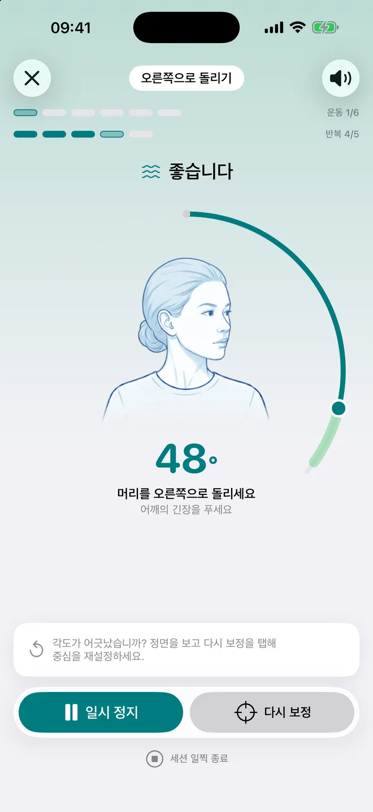
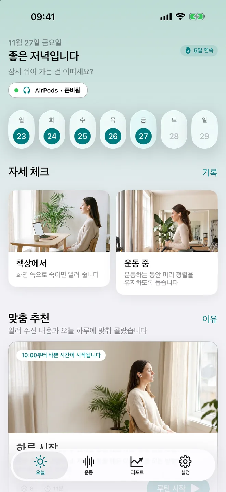
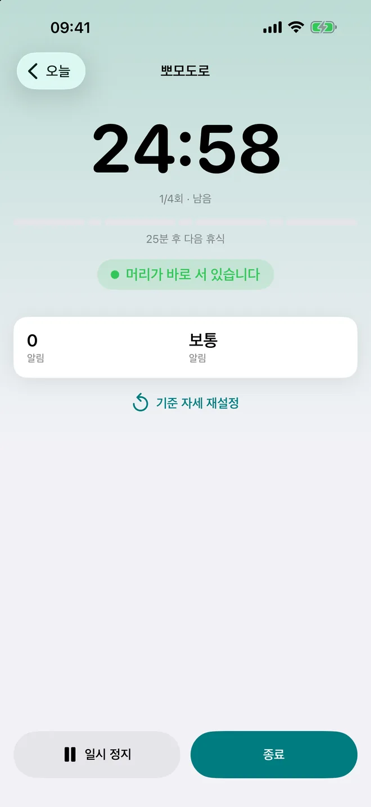

목
좌우로 돌리기, 옆으로 기울이기, 아래 보기와 위 보기, 턱 당기기. AirPods가 각도를 측정하고 반복 횟수를 셉니다. AirPods가 없으면 Nodly가 타이머로 속도를 안내합니다.
목, 호흡, 눈, 손, 다리를 위한 짧은 운동과 책상 요가. Nodly는 AirPods로 목의 움직임을 측정하고, 자세를 지켜보며, 고개를 너무 오래 숙이고 있으면 알려 줍니다.
App Store에서 다운로드iPhone 및 iPad용 · 호환 AirPods가 있어도, 없어도

목만이 아닙니다
좌우로 돌리기, 옆으로 기울이기, 아래 보기와 위 보기, 턱 당기기. AirPods가 각도를 측정하고 반복 횟수를 셉니다. AirPods가 없으면 Nodly가 타이머로 속도를 안내합니다.

길게 내쉬기, 박스 호흡, 균형 호흡을 1분, 2분 또는 3분 동안. 그림과 가벼운 진동이 리듬을 안내합니다.

화면에서 벗어나는 2분 휴식. 먼 곳을 보고, 천천히 깜빡인 다음, 눈을 감고 쉽니다.

손목 늘이기, 손목 돌리기, 주먹 쥐었다 펴기. 키보드와 마우스를 쓰는 하루를 위해.

뒤꿈치 들기, 발끝 들기, 무릎 펴기, 앉아서 제자리걸음. 의자에서 일어나지 않고 할 수 있습니다.

앉아서 고양이-소 자세, 옆구리 늘이기, 몸통 비틀기, 그리고 회의 사이에 몸을 푸는 어깨 동작.
AirPods는 목 추적에만 사용합니다. 나머지는 모두 AirPods 없이 할 수 있습니다.
AirPods로 측정
이어버드의 동작 센서가 머리 각도를 따라갑니다. 목표 범위에 닿으면 Nodly가 소리와 진동으로 알려 주고 반복 횟수를 대신 셉니다. 목표는 본인의 가동 범위에 맞춰 조정됩니다.
Nodly는 이어버드의 동작 센서를 사용합니다. 카메라도, 추가 기기도 필요 없습니다.
정면을 보고 몇 초간 움직이지 마세요. Nodly가 이 자세를 0°로 설정합니다.
목표 범위에 닿으면 Nodly가 소리와 진동으로 알려 주고 반복 횟수를 대신 셉니다.
0°
오른쪽
초록색 범위에 닿을 때까지 오른쪽으로 드래그한 다음, 가운데로 돌아오세요.
반복: 0


자세 체크
일하는 동안 30분에서 2시간까지, 또는 25분 작업과 5분 휴식을 반복하는 뽀모도로로 머리 자세를 지켜봅니다.
서서 하는 운동 중에 고개가 떨어지면 몇 초 안에 알려 줍니다. 누워서 하는 운동 중에는 일시 정지하면 됩니다.
iPhone을 잠그고 계속 일하세요. 남은 시간이 잠금 화면에 표시되며, 그곳에서 일시 정지하거나 종료할 수 있습니다.
Siri, 제어 센터, 또는 단축어의 집중 모드 자동화로 시작할 수 있습니다.
“Nodly에서 자세 체크 시작”
루틴
하루 시작이나 화면 휴식 같은 기본 루틴으로 시작하거나, 라이브러리에서 동작을 골라 원하는 순서로 구성하세요. 오늘 화면의 맞춤 추천이 하루 일정과 가장 바쁜 시간에 맞는 루틴을 제안합니다.
리포트
연속 기록, 이번 주 기록, 그리고 목·호흡·눈·손·다리에 쓴 시간을 한눈에. 운동할수록 작은 3D 책상이 조금씩 정리됩니다.
세부 사항
기록과 루틴이 본인의 iCloud를 통해 iPhone과 iPad 간에 동기화됩니다.
목 운동은 타이머에 맞춰 할 수 있습니다. 다른 운동에는 AirPods가 필요하지 않습니다.
매일 알림, 바쁜 시간 중 책상 휴식, 주간 요약. 모두 선택 사항입니다.
음성 안내, 사운드, 햅틱이 안내하므로 화면을 보지 않아도 됩니다.
iPhone과 iPad에서 Dynamic Type, VoiceOver, 동작 줄이기를 지원합니다.
한국어, 영어, 터키어, 독일어, 스페인어, 프랑스어, 이탈리아어, 포르투갈어, 네덜란드어, 러시아어, 일본어, 중국어(간체 및 번체).
개인정보 보호와 신뢰
동작 데이터는 iPhone에서 처리되며 원시 동작 데이터는 저장되지 않습니다. 계정도 필요 없습니다.
동작은 천천히, 편안하게 느껴져야 합니다. 불편하면 즉시 멈추세요. Nodly는 절대 무리하게 요구하지 않습니다.
Nodly는 웰니스 앱이며 어떠한 질환도 진단하거나 치료하지 않습니다. 목에 질환이 있다면 시작하기 전에 의료 전문가와 상담하세요.